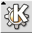

-
The "K" Button at the bottom-left corner of the screen behaves much like
the "Start" button on Windows.
 -
The folder icon with the house picture opens a file manager window.

- The KDE File Manager looks and feels very much like the Windows Explorer.
- Moving Windows around and clicking on their decorations will yield the same effect as in Windows.